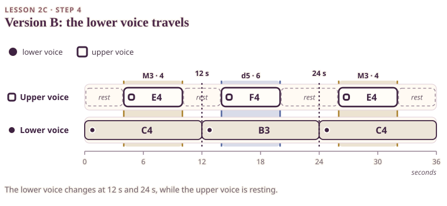

Now keep exactly the same upper melody: E4 from 4 to 10 seconds, F4 from 14 to 20, E4 from 26 to 32. Nothing about the upper voice changes, not the notes, not the timing, not the sound.

The dashed lines at 12 and 24 seconds mark where the lower voice changes. At both moments the upper lane is a dashed rest, so no pair changes at that instant. The F4 only sounds from 14 to 20 seconds, over B3, and that band carries the tritone colour.
On your keyboard. 1. Play Version A first, if you made it in the last step, so that you have something to compare with. 2. Play Version B: hold C4 from 0 to 12 seconds. At 12 seconds, release C4 and play B3, and hold it. At 24 seconds, release B3 and play C4 again, and hold until 36. 3. Play the upper melody exactly as before. 4. Play only the lower voice from Version B by itself. Notice its three notes: C, B, C.